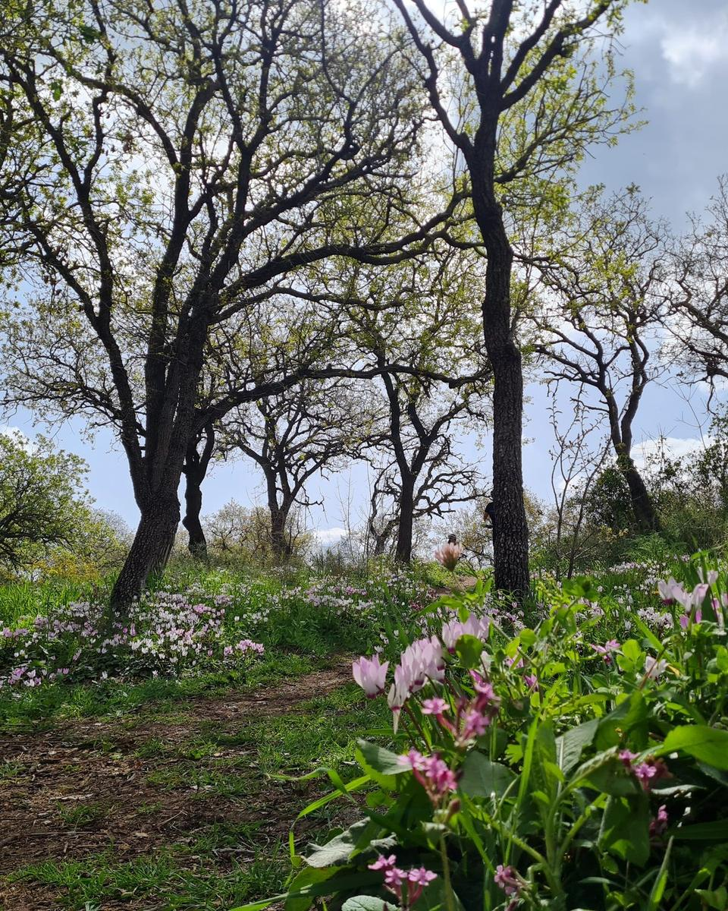

מה אפשר לקחת מהתהליך
- בהירות לגבי כיוון אישי ומקצועי
- קבלת החלטות מתוך בחירה ולא מתוך תגובה
- חיבור מחדש לחוזקות, לערכים ולביטחון העצמי
- ליווי בתקופות מעבר – כולל רילוקיישן וחזרה ממנו
מתאים לרגעים של צומת, כשהמטרה היא לצאת ממנו עם כיוון.
אימון אישי בתקופות של שינוי – בקריירה, בחיים ובכל מה שביניהם. ליווי אחד על אחד, עם הקשבה עמוקה וכלים מעשיים להתקדם.
שיחה קצרה בוואטסאפ או בזום, בלי עלות ובלי מחויבות.

בדרך כלל ברגעים שבהם משהו כבר זז – או מבקש לזוז.
התפקיד הנוכחי כבר לא מספיק, ולא ברור מה הצעד הבא – קידום, הסבה או כיוון חדש לגמרי.
כניסה לניהול, צוות ראשון או תפקיד בכיר שמביא איתו אתגרים שאין להם תמיד הכנה מראש.
אחרי חופשת לידה, תקופה בבית או שנה אחרת – והרצון הוא לחזור לעשייה מתוך בחירה ולא מתוך לחץ.
רילוקיישן מערער זהות, שגרה וקריירה. זה תחום שאני מכירה מקרוב – מבפנים.
לליווי הייעודי לרילוקיישן ←יש כמה אפשרויות על השולחן, וקשה לבחור. צריך מקום שקט לחשוב בו בבהירות.
מבחוץ הכול נראה בסדר, אבל מבפנים משהו מבקש שינוי – וקשה לשים עליו את האצבע.
אם אחד מאלה נשמע מוכר – זו בדיוק נקודה טובה להתחיל ממנה.
תהליך אימון ממוקד שמחבר בין מה שחשוב לך באמת לבין צעדים מעשיים קדימה. אני לא נותנת תשובות – אני עוזרת לך למצוא את שלך.
מתאים לרגעים של צומת, כשהמטרה היא לצאת ממנו עם כיוון.
בדרך לרילוקיישן, כבר שם, או בדיוק חזרת? מעבר מדינה מערער זהות, קריירה ושייכות. בניתי ליווי אישי שמיועד בדיוק לתקופה הזו – מתוך ניסיון אישי, מבפנים.
הרצאות שמביאות את השאלות של שינוי, צמיחה ודיוק אישי אל הקבוצה – עם תובנות מהשטח וכלים שאפשר לקחת הביתה.
לחיות מתוך בחירה, לא רק מתוך מומנטום
במפגש אישי ומעורר מחשבה, דריה אליאס, מנהלת מוצר ומאמנת, מחברת בין חשיבה מעולם המוצר לבין החיים עצמם. דרך סיפורים והתבוננות היא תשתף כלים פרקטיים לזיהוי המצפן האישי, לבחינת המקום שבו נמצאים היום ולבחירה מודעת בדרך שבה רוצים להמשיך מכאן.
חשיבה המצאתית שיטתית
חדשנות לא מתחילה בחשיבה מחוץ לקופסה, אלא דווקא במה שכבר נמצא בתוכה. הרצאה אינטראקטיבית שמנפצת מיתוסים על יצירתיות ומציגה מתודולוגיה פרקטית לייצור רעיונות חדשניים, פתרון בעיות וזיהוי הזדמנויות – בלי לחכות להשראה.
על חלומות, בחירות והאומץ לשנות כיוון
שנתיים של הפלגה משפחתית בקריביים, רחוק מהשגרה ומכל מה שמוכר. סיפור אישי על חלום שהפך למציאות, על החיים בים עם שלושה ילדים, על התמודדות עם אתגרים וחוסר ודאות, ועל התובנות שמגלים כשבוחרים לצאת להרפתקה.
ההרצאות מותאמות לקהל ומתקיימות פרונטלית או בזום.
לפרטים והזמנת הרצאהשיחה קצרה וללא עלות, כדי להבין את נקודת הפתיחה ולבדוק יחד אם זה מתאים.
הגדרה משותפת של מה חשוב לשנות, ואיך נדע שהגענו לשם.
פגישות קבועות אחד על אחד, בקצב שלך, עם צעדים קטנים ומדויקים בין מפגש למפגש.
בהירות, ביטחון וכלים שנשארים גם אחרי שהתהליך מסתיים.
במשך שנים בניתי קריירה בעולם הטכנולוגיה, וניהלתי מוצרים וצוותים בחברות גלובליות. אני מכירה מקרוב את הלחצים, ההחלטות והצמתים שמגיעים עם צמיחה מקצועית – וגם את הרגעים שבהם עולה השאלה: רגע, זה עדיין מה שאני רוצה?
את השאלות האלה שאלתי בעצמי לא מעט פעמים: במעבר לארצות הברית בעקבות הקריירה של בן זוגי, בהרפתקה משפחתית של כמעט שנתיים בקאריביים, ובחזרה לישראל. כל אחד מהמעברים האלה ערער משהו – וכל אחד מהם גם פתח אפשרות לבנות מחדש.
היום, לצד ייעוץ בניהול מוצר לחברות תוכנה, אני מלווה כמאמנת מוסמכת נשים וגברים בתהליכי שינוי, צמיחה ודיוק אישי. אני מביאה איתי הקשבה, סקרנות, ישירות – והרבה ניסיון מהשטח.
"מעברים גדולים, למרות הטלטלה שהם מביאים איתם, יכולים להפוך להזדמנות לעצור, לדייק ולבנות מחדש חיים שמתאימים למי שאנחנו היום."דריה אליאס
אם משהו כאן נגע בך, אשמח להכיר. בשיחת היכרות קצרה נדבר על נקודת הפתיחה שלך היום ועל מה שחשוב לך לשנות – ונבדוק יחד אם התהליך מתאים לך.
לכתוב לי בוואטסאפבלי עלות ובלי מחויבות. אני עונה באופן אישי.
באימון אין לי אגנדה משלי: אני שואלת, מקשיבה ומשקפת, והתשובות שלך הן שמובילות את הדרך. המטרה היא לצאת עם בהירות ועם צעדים מעשיים שמתאימים לך.
ממש לא. רוב התהליכים מתחילים דווקא בלי תשובה ברורה – וזה בסדר גמור. בדיוק לשם כך התהליך קיים.
פגישות אישיות אונליין, אחד על אחד, כך שאפשר להיפגש מכל מקום בעולם. את מבנה התהליך ואת התדירות נקבע יחד בשיחת ההיכרות.
לנשים ולגברים כאחד, בכל שלב בקריירה ובחיים – בכל רגע שבו משהו מבקש שינוי.